SFS Filesystem
Yamaha A-series hard-disk images use an SFS container for partitions, directories, object files, and allocation state. axklib reads this layer before it decodes the sampler object payloads described in Sampler Data Structures.
SFS is the hard-disk container family used by .hda, .hds, and equivalent raw
hard-disk images. It is not FAT12 and it is not ISO9660. FAT12 floppies and
CD-ROM images can carry the same sampler object payloads, but their container
layers are different.
Specification Scope
This page documents the SFS structures that the current axklib reader validates and the narrower profile emitted by the writer. It is not a claim that every reserved byte has a known meaning.
| Area | Reader contract | Writer contract |
|---|---|---|
| Disk geometry | Reads the bounded sector and cluster values stored in the image. | Emits 512-byte sectors, two sectors per cluster, and one to eight partition slots. |
| Index and allocation | Reads direct and continuation extents, reconstructs allocation, and reports inconsistencies. | Computes the bitmap, index span, extents, and compatibility metadata from the requested image model. |
| Directory tree | Reads reachable and structurally valid directory records while retaining diagnostics for malformed or unreachable records. | Emits partition, volume, category, and object entries for the supported authored object profile. |
| Sampler objects | Passes supported payloads to the object decoders; see Sampler Data Structures. | Emits only the object types and topologies listed under Generated Image Writing. |
| Uninterpreted bytes | Retains or reports relevant raw values without assigning semantics. | Writes only the documented compatibility values and deliberately zeroes unsupported residue. |
Applications should use the parser and writer APIs instead of treating this page as permission to synthesize fields whose meaning is still unspecified.

Byte Order And Units
SFS container numeric fields used by axklib are big-endian. Disk locations in the SFS headers are sector or cluster indexes; axklib converts them to byte offsets when reading an image.
Common units:
| Unit | Size or rule |
|---|---|
| Sector | Stored in the disk superblock, commonly 512 bytes. |
| Cluster | sector_size * sectors_per_cluster; commonly two sectors. |
| Index record | 72 bytes. |
| Index block | 1024 bytes, with 14 usable records and 16 bytes of overhead. |
| Directory entry | 32 bytes in current directory payloads. |
| Extent triplet | 12 bytes. |
Disk Superblock
An SFS disk image starts with a superblock. The second sector stores a duplicate copy. axklib uses the first copy for normal reads and reports duplicate/header problems through validation.
| Offset | Size | Type | Meaning |
|---|---|---|---|
0x000 |
11 | ASCII | Disk signature YAMAHA_dev3. |
0x00b |
117 | bytes | Reserved area; the public reader does not interpret it. |
0x080 |
28 | bytes | Disk mode/device metadata area; surfaced only as raw structure when inspected. |
0x09c |
4 | u32be | Sector size in bytes. |
0x0a0 |
4 | u32be | Total sector count in the image. |
0x0a4 |
4 | u32be | Reserved value; the public reader does not interpret it. |
0x0a8 |
64 | table | Eight partition entries, each 8 bytes. |
0x0e8 |
280 | bytes | Reserved area; the public reader does not interpret it. |
Partition entry layout:
| Entry offset | Size | Type | Meaning |
|---|---|---|---|
+0x00 |
4 | u32be | Partition start sector. |
+0x04 |
4 | u32be | Partition sector count. |
A valid active partition entry has both values non-zero. The reader treats an entry with either value non-zero as occupied so a half-populated entry is reported as invalid geometry instead of being silently ignored. Fresh generated images populate both values and the disk mode metadata area.
A-series hard-disk images also use sector 2, and for multiple partitions the
sectors immediately before later partitions, as auxiliary formatter-transfer
sectors. Their leading eight bytes are deterministic transfer tokens from
ab432100 through ab432107; the low three bits carry the partition sequence,
and the remaining token bits are compatibility values rather than disk geometry
or persistent disk IDs. Generated images zero prior-token residue at
+0x09..+0x10.
axklib does not expose these sectors as part of the directory or object tree.
Older label-entry marker/name records in them are intentionally zero-generated;
they are not required for hardware loading.
Partition Header
Each active partition starts at its partition start sector. The partition header is 1024 bytes and is followed by a duplicate copy.
| Offset | Size | Type | Meaning |
|---|---|---|---|
0x000 |
11 | ASCII | Partition signature YAMAHA_dev3. |
0x040 |
16 | ASCII | Partition name, space-padded. |
0x080 |
4 | u32be | Static or mode value; currently not interpreted by public APIs. |
0x084 |
4 | u32be | Static or mode value; currently not interpreted by public APIs. |
0x088 |
8 | bytes | Reserved bytes; currently not interpreted by public APIs. |
0x090 |
4 | u32be | Number of clusters in the partition. |
0x094 |
4 | u32be | Sectors per cluster. |
0x098 |
4 | u32be | Header-related value; currently surfaced only as raw structure. |
0x09c |
4 | u32be | Cluster offset to the allocation bitmap. |
0x0a0 |
4 | u32be | Reserved value; currently not interpreted by public APIs. |
0x0a4 |
4 | u32be | Cluster offset to the directory/file index. |
0x0a8 |
4 | u32be | Directory/file index span in clusters. |
For generated images, the full primary and duplicate 1024-byte partition-header sectors are part of the write contract. The named fields above are sufficient for ordinary parsing, but hardware loading also depends on initialized metadata bytes in the otherwise uninterpreted header area. Do not synthesize those header sectors by writing only the named fields and leaving the remaining bytes zero.
Cluster offsets are partition-relative. Convert a cluster offset to an absolute byte offset with:
absolute_sector = partition_start_sector + cluster_offset * sectors_per_cluster
absolute_offset = absolute_sector * sector_size
Allocation Bitmap
The allocation bitmap starts at the partition header field 0x09c. It stores one
bit per cluster. A set bit means the cluster is allocated; a clear bit means it
is free.
bitmap_offset = (partition_start_sector
+ bitmap_cluster_offset * sectors_per_cluster)
* sector_size
bitmap_bytes = ceil(number_of_clusters / 8)
byte_index = cluster_offset // 8
bit_mask = 0x80 >> (cluster_offset & 7)
allocated = (bitmap[byte_index] & bit_mask) != 0
Validation reconstructs a second bitmap from all valid index-record extents, then compares it with the stored bitmap:
| Direction | Meaning |
|---|---|
stored_used_not_reconstructed |
Stored bitmap marks a cluster used, but no valid index record owns it. |
reconstructed_used_not_stored |
A valid index record owns a cluster that is clear in the stored bitmap. |
Mismatch reports use inclusive cluster ranges so large gaps can be reviewed without listing every cluster.
An index record can remain structurally parseable even when it is no longer
reachable from the root directory. Destructive sampler save operations may
leave such records behind while clearing some of their extent bits in the
allocation bitmap. axklib still reports
index-extent-references-free-cluster as an allocation error: directory
unreachability explains why the sampler can ignore the remnant, but it does not
make the record and bitmap agree. The validator does not silently discard or
repair these records.
A-series 256 MiB images also carry an early mirror of the first
allocation-bitmap sector immediately after the duplicate partition header.
Generated images write that mirror as well, while the partition header field
0x09c remains the authoritative primary bitmap location for reads and
validation.
Free Space
SFS free space excludes both the reserved metadata prefix and clusters marked used in the allocation bitmap:
first_payload_cluster = directory_index_cluster + directory_index_span
free_clusters = cluster_count - first_payload_cluster - allocated_clusters
free_bytes = free_clusters * sectors_per_cluster * sector_size
sampler_visible_free_kib = free_bytes // 1024
Use the native function for the same calculation in applications:
auto space = axk::calculate_sfs_free_space(1'048'575, 616, 65, 512);
assert(space && space->sampler_visible_free_kib == 1'047'894);
axklib validate allocation summaries include first_payload_cluster,
reserved_cluster_count, sampler_free_cluster_count, sampler_free_bytes,
and sampler_visible_free_kib. Impossible geometry returns a typed error
instead of negative capacity.
Directory And File Index
The directory/file index starts at partition header field 0x0a4:
index_offset = (partition_start_sector
+ index_cluster_offset * sectors_per_cluster)
* sector_size
The index is divided into 1024-byte blocks. Each block contains 14 records of 72 bytes; the final 16 bytes are block overhead.
record_offset_in_index = (sfs_id // 14) * 1024 + (sfs_id % 14) * 72
absolute_record_offset = index_offset + record_offset_in_index
The inverse mapping is:
block = record_offset_in_index // 1024
slot = (record_offset_in_index % 1024) // 72
sfs_id = block * 14 + slot
Offsets inside the 16-byte block overhead are not records.
Index Record Layout
axklib treats an index slot as a valid extent record when the structural fields form a readable object or directory payload. The record format used for data reads is:
| Record offset | Size | Type | Meaning |
|---|---|---|---|
0x00 |
2 | u16be | Extent count. |
0x02 |
2 | u16be | Reserved or flags; current valid data records use zero here. |
0x04 |
2 | u16be | Total cluster count. |
0x06 |
4 | u32be | Logical data size in bytes. |
0x0a |
4 | u32be | First data cluster for direct records, or continuation-list cluster for multi-extent records. |
0x0e |
4 | u32be | First direct extent cluster count for direct records. |
0x12 |
4 | u32be | First direct extent byte count for direct records. |
0x42 |
6 | bytes | Record metadata and flags. The reader does not require these bytes to resolve payload extents. |
The data-size field is the number of logical bytes to return to the object or directory decoder. Allocated storage can be larger because cluster allocation is rounded up to full clusters.
Direct Extents
Records with one to four extents store extent triplets directly in the index
record. Triplets start at 0x0a and have this layout:
| Triplet offset | Size | Type | Meaning |
|---|---|---|---|
+0x00 |
4 | u32be | Cluster offset. |
+0x04 |
4 | u32be | Cluster count. |
+0x08 |
4 | u32be | Byte count to read from this extent. |
Direct read algorithm:
remaining = record.total_data_size
for each direct extent in order:
capacity = extent.cluster_count * sectors_per_cluster * sector_size
read_size = min(extent.byte_count, capacity, remaining)
append bytes from cluster_absolute_offset(extent.cluster_offset)
remaining -= read_size
If the assembled byte count differs from total_data_size, validation reports a
logical read mismatch.
Continuation Extents
Records with five or more extents use a continuation-list cluster. The index
record field at 0x0a points to the first list cluster. Each continuation-list
cluster is allocated storage and starts with this layout:
| Offset | Size | Type | Meaning |
|---|---|---|---|
0x00 |
4 | u32be | Number of triplets in this list cluster. |
0x04 |
4 | u32be | List bookkeeping value. |
0x08 |
4 | u32be | Next list cluster, or zero at the end. |
0x0c |
variable | triplets | 12-byte extent triplets. |
Continuation read algorithm:
list_cluster = record.first_cluster
remaining_triplets = record.extent_count
while list_cluster != 0 and remaining_triplets > 0:
read one cluster at list_cluster
read triplet_count and next_list_cluster
append triplets at +0x0c
mark list_cluster allocated
list_cluster = next_list_cluster
The reader stops on loops, out-of-range list clusters, impossible triplet counts, or when the requested extent count is consumed. Warnings are carried into validation and report outputs.
Directory Payload Entries
Directory payloads contain 32-byte entries. Directory entries connect a name to an SFS ID in the same partition.
| Entry offset | Size | Type | Meaning |
|---|---|---|---|
0x00 |
2 | u16be | Entry flags or class. |
0x02 |
2 | u16be | Name length including the NUL byte in current entries. |
0x04 |
4 | u32be | Link ID. For current reads this maps to an SFS ID. |
0x08 |
variable | ASCII | Entry name bytes, NUL-terminated or padded. |
Special names . and .. are directory navigation entries. Other entries are
matched to index records by link_id. axklib classifies the target as a
directory or an object file by the target index record and payload.
Object Payload Resolution
SFS object loading follows this path:
directory entry -> link_id -> index record -> extents -> payload bytes
A supported current sampler object payload starts with FSFSDEV3SPLX. The object type tag
is read by the sampler-data decoder at payload offset 0x0c..0x0f; the display
name is read from the object header name field. SFS placement metadata remains
attached to the object:
| Metadata | Meaning |
|---|---|
partition_index |
Partition entry index from the disk superblock. |
sfs_id |
Index-record ID that supplied the payload. |
payload_offset |
Absolute byte offset of the first payload byte. |
payload_size |
Logical payload byte count from the index record. |
scope_key |
Source image plus partition scope. |
object_key |
Stable key such as p0:sfs23. |
User-Facing Tree Mapping
axklib builds the user-facing tree from SFS directory placement:
partition -> volume -> category -> object
Current category directories use object type codes such as PROG, SBNK,
SBAC, SMPL, and SEQU. The normal tree renders these as Programs, Sample
Banks, Waveforms, and Sequences. SBAC is an internal object type rendered as a
Sample Bank Group when it appears as the visible B <name> level.
See Name, Path, And Export Mapping for display labels, duplicate names, default Program slots, and export directory rules.
Validation
SFS validation covers both container structure and sampler object relationships. Container checks include:
| Check | Failure shape |
|---|---|
| Superblock/header identity | Unsupported or malformed SFS image. |
| Duplicate headers | Header copy differs or cannot be read. |
| Allocation bitmap | Stored/reconstructed cluster mismatch. |
| Index records | Invalid extent count, impossible extent size, malformed continuation list. |
| Directory entries | Blank names, zero link ID, unknown target, mismatched target type. |
| Payload reads | Logical byte count mismatch or unsupported object payload. |
Relationship and sampler-data validation is reported separately so a caller can distinguish a broken filesystem from a readable filesystem that contains broken sampler object links.
Generated Image Writing
The writer APIs create fresh HDS/SFS images from a small typed model. The
current writer creates a new hard-disk image, partitions,
volumes, current-format SMPL waveform objects, direct single-member SBNK
sample-bank objects, equal-format two-member stereo SBNK objects, and one
explicitly bounded one-to-three-member SBAC / Program profile. It does not modify
existing images and does not require a template container image.
The first writer scope is intentionally narrow:
- image size is capped at
2_147_483_648bytes; - each generated partition is capped at
1_073_741_824bytes; - audio input may use any libsndfile-supported container and subtype, but must be mono for ordinary waveform import or stereo for one-call stereo-bank import; sources are converted to signed 16-bit PCM and unsupported rates are resampled with the soxr VHQ profile;
- generated sampler objects are current
FSFSDEV3SPLXSMPLandSBNKrecords; - generated
SBNKobjects link either one waveform member or a confirmed left/right pair by name and link ID; - generated disk headers include the bounded superblock compatibility block, initialized sector-2 disk metadata, full primary and duplicate partition-header sectors for the supported hard-disk metadata profile, and the early first-bitmap-sector mirror used by A-series hard-disk images;
- generated directory records include the standard root system entries, directory-entry metadata tails, scaled bitmap/index geometry, and volume category directories used by A-series hard-disk images;
- generated current
SMPLobject payloads use a0x200object header with compact waveform metadata at the current metadata offset and waveform data beginning after that header; generated storage includes the logical WAV frames plus a short compatibility tail while logical frame fields remain based on the input WAV; - generated current
SBNKobject payloads use the current single-member sample-bank object span, populated default parameter/control block, and header fields for a normal sample bank that references one waveform object; - generated two-member stereo
SBNKobjects reference two physical mono SMPL objects. The members must have matching 16-bit width, sample rate, and logical frame count. One interleaved source can be split into those physical members during import; extraction may render them as interleaved stereo again; - generated direct single-member
SBNKobjects include hardware-tested reserved Sample Parameter defaults atSBNK+0x152..0x15b. Yamaha labels the corresponding decimal Sample Parameter offsets0170..0179as reserved, but generated images need compatible values there for audible playback and normal tone. - the initial SBAC/PROG profile uses the general supported image geometry. A
partition may contain multiple independently configured volumes. Each volume
may contain multiple groups of one through three mono children, with one
matching Program and direct mono control per group. Programs
001..128assign their group to receive channel1and their direct control to channel2. Runtime handles, unused bank state, unused Program effect/controller blocks, and unused Program tail state are zero; only the direct SBNK receives the corresponding Program relationship bitmap.
Callers should treat this as a generated-image API, not as an image repair or
mutation API. Use axklib info, axklib validate, and axklib extract wav file
on generated images before testing them on hardware.
Hardware loading has shown that sector 2, per-partition metadata sectors, and
full partition-header sectors are part of the loadable generated-image contract.
Generated hard-disk partitions use 512-byte sectors and two-sector clusters.
The writer accepts 512-byte-aligned images from 1 MiB through 2 GiB with one
through eight equal partition slots. Given N partitions, total_sectors is
size_bytes / 512, the slot span is
min(floor((total_sectors - 2) / N), 0x1fffff), partition i starts at
3 + i * slot_span, and its stored sector count is slot_span - 1. Every slot
must have at least 2045 partition sectors. Division remainder and capacity past
the 1 GiB slot-span cap remain unused at the end of the image.
That geometry and metadata algorithm has loaded successfully across one through
eight partition indexes, smaller and capped slot spans, a division remainder,
the 1 MiB minimum, and the 2 GiB maximum. Generated images with multiple
volumes, multiple current SMPL objects, direct single-member SBNK objects,
and isolated object-count growth have also loaded successfully. The tested
generated SBNK root key, key range, and sample level fields are sampler-visible.
Copying non-logical allocated-cluster tail bytes was not required. axklib treats
those tail bytes as storage padding unless a later compatibility case proves
otherwise.
The writer constructs the superblock, partition table, sector-2 metadata,
partition headers, allocation bitmap, directory index, and object payload
extents from the typed image model. Fields with known formulas, such as
partition slot placement, partition-header start/count words, partition-index
words, leading formatter-transfer tokens, and dynamic header words, are
generated explicitly.
Partition headers are zero-initialized, and only the retained explicit fields
are written. Hardware checks showed that the former fixed nonzero tail bytes
are not required; they remain zero for generated images. The validated
non-required residue range at +0x1bc..+0x1e3 is also zero-generated. Sector-2
label-entry records and the +0x30..+0x3e range are deliberately zero-generated.
Writer Compatibility Metadata
The writer keeps compatibility metadata explicit and computes geometry-dependent values from small formulas. It does not copy broad binary templates.
| Metadata area | Public contract |
|---|---|
Superblock formatter-residue block at +0x80..+0x9b |
Preserved as one fixed compatibility block. The writer does not interpret its seven words as geometry fields. |
Leading formatter-transfer token at sector +0x00..+0x07 |
Rendered as eight lowercase hexadecimal digits from base ab432100 plus the bounded three-bit partition sequence. The base is not derived from disk geometry. |
Prior-token residue at sector +0x09..+0x10 |
Zeroed after object-bearing hardware checks showed it is not required. |
Sector-2 range at +0x30..+0x3e |
Zeroed after hardware validation showed it is not required. |
| Former partition-header fixed tail bytes | Zeroed after object-bearing hardware checks showed they are not required. Retained tail words are written explicitly. |
Partition-header residue range at +0x1bc..+0x1e3 |
Zeroed after hardware validation showed it is not required. |
Partition-header +0x14c |
Written as total image sectors for one or two partitions; for N >= 3, written as total image sectors minus N - 2. |
Partition-header +0x194 |
Written as zero for layouts with three or more partitions; otherwise uses the count marker required by one- and two-partition layouts. |
These fields are part of the compatibility envelope for generated images. Bytes that hardware validation shows are not required are deliberately zeroed. Applications should use the typed writer or JSON manifest rather than constructing these fields manually.
Minimal Read Walkthrough
A minimal SFS reader performs these steps:
- Read sector 0 and check
YAMAHA_dev3. - Read sector size and the eight partition entries.
- For each active partition, read the partition header and cluster geometry.
- Read the allocation bitmap and directory/file index region.
- Walk 72-byte index records using the 14-record-per-block mapping.
- Read directory payloads and match entry
link_idvalues to SFS IDs. - For each object file entry, read extents and return logical payload bytes.
- Pass
FSFSDEV3SPLXpayloads to the sampler-data decoder. - Attach SFS placement metadata to every decoded object.
- Run allocation and directory validation if a consistency report is needed.